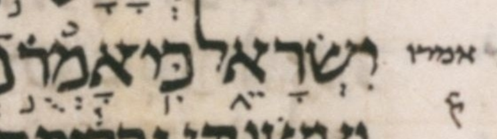

| bcv (link to tanach.us) | 1s13:19 |
| MPK | אָמְרֻ֣ |
| qere | אָמְר֣וּ |
| at issue | וּ |
| at issue English | changed a qubuts to a shuruq |
| folio col line | 156B 2 22/23 |
The qubuts in the MPK becomes a shuruq dot in the qere.
There’s a large, clear dot above the ר; I don’t know what it is supposed to mean, if anything. Surely not a revia!